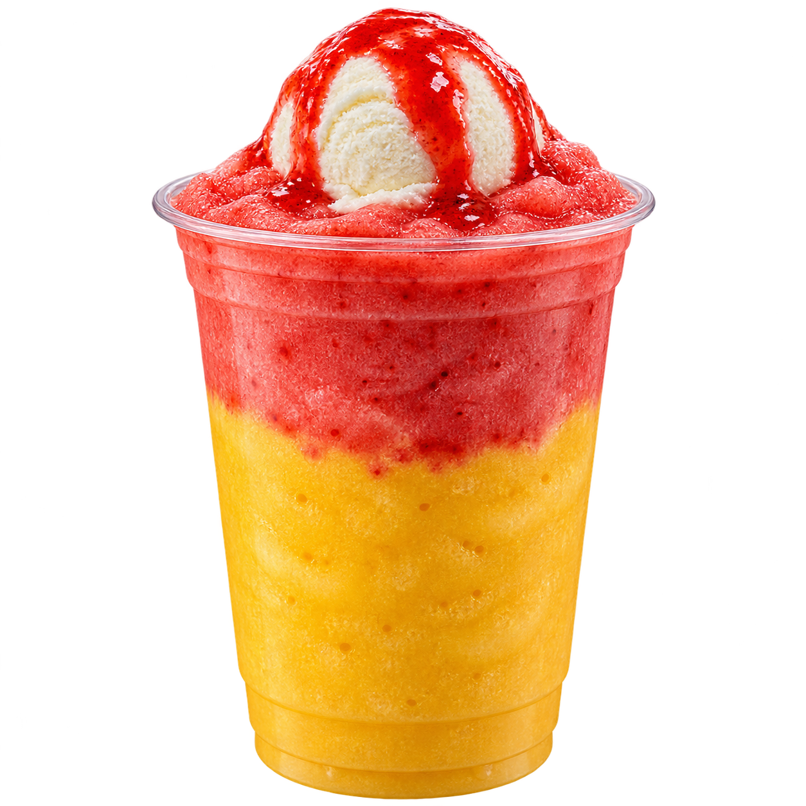

Frappe & Smoothies · 16 oz only
Without ice cream: ₱119
With 40 ml vanilla ice cream: ₱129
Review ingredient links and stock conversion below. The conversion is inventory units per recipe unit. Water containers need their actual container volume. Existing stock links are reused when available.
Strawberry sauce is shown in the picture and procedure, but its quantity was not supplied and is not yet included in costing/deductions.